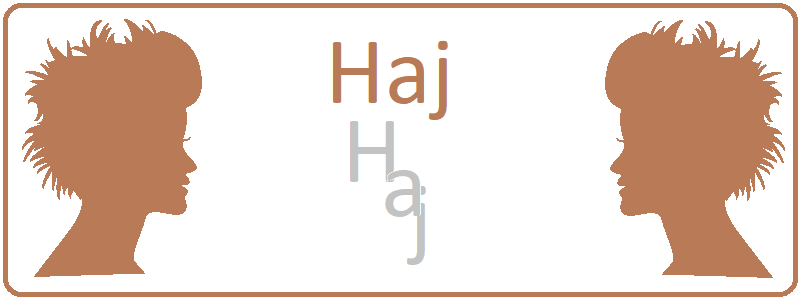

Hány szál van belőle, miért hullik, hogyan nő?
Meddig él egy hajszál? Hány hajszálunk van? Miért hullik ki a hajunk? Milyen hosszúra nőhet a haj? Ezekre és más érdekes kérdésekre is választ kaphat cikkünkben.
Annyira nem is sok, mint elsőre gondolnánk. Átlagosan azt mondhatjuk, 100-150.000 hajszálunk van, de bármilyen meglepő, hajszálaink száma függ a hajszínünktől is. A szőkék kb. 140.000 vékonyabb, a barnák kb. 100.000 kicsit vastagabb, a vörösek csak 85.000, de viszonylag vastag hajszálat számolhatnának meg a fejükön.
Az ember haja embrionális korban, a 6. terhességi héten kezd el kifejlődni. Ekkor körülbelül ötmillió szőrtüsző jelenik meg a bőrünkben, melyek száma a születés után már nem nő. A szőrtüszőkből nem feltétlenül nő szőrszál, és egy adott szőrtüsző az élet során különböző típusú haj-, illetve szőrszálakat tud növeszteni. Így például a pubertáskori szakállszőrzethez szükséges tüszők is az embrionális kortól kezdve várják, hogy a hormonális változások hatására működésbe léphessenek. A haj rendszerint kissé gyorsabban nő, mint a test más helyein található szőrzet, mivel a fejbőr hajhagymái aktívabban működnek. A szőrtüszők működése alapvetően genetikai és hormonális meghatározottságú.
A haj, illetve a szőrszálak élettartama nagyon különböző lehet. Egy átlagos hajszál körülbelül 7 évet él. A növekedési fázis a férfiaknál 2-4, a nőknél 4-6 évig tart. 2-4 hetes átmeneti időszak után a hajszál - úgymond - még 3-4 hónapot tölt a fejen, majd kihullik, hogy helyet csináljon az új hajszálnak. Egy hajtüsző egymás után 10-12 hajszálat tud növeszteni. Így elméletileg 90-100 éves korunk környékére szinte teljesen kopasznak kellene lennünk - ez azonban azért nincs mindig így, mert a fejbőrünkben is van néhány "alvó" szőrtüsző, amelyek később aktiválódnak.
A növekedési fázisban levő hajszál naponta átlagosan 0,3 mm-t, azaz háromnaponta mintegy egy millimétert nő. Mivel évente így körülbelül 15 cm-rel számolhatunk, a leghosszabb frizura a férfiak esetében vágás nélkül 40-50, a nőknél 70-80 cm hosszú is lehet. Ennél hosszabb viszont nem valószínű, hiszen egy ekkora hajszál rövidesen kihullik, és a következő megint elölről kezdi a centimétereket. Ráadásul egy ilyen hosszú hajszál súlya már komoly megterhelést jelent a hajhagymának.
A drasztikus, egyoldalú fogyókúráknak bizony lehet hajhullás a következménye. A hajhagyma gyorsan osztódó sejtjei különösen érzékenyek a szervezetbe vagy a fejbőrre kerülő különböző mérgekre (például hajfestéskor, daueroláskor alkalmazott szerekre), valamint a tápanyaghiányra. Nem szándékosan, de sokan a kilókkal együtt a hajuktól is megszabadulnak. A vitamin- és nyomelemhiány nem azonnal bosszulja meg magát, hanem a hiány beállta után mintegy két hónappal.
Bár egyesek állítják, hogy a hajhagymák megfázása is okozhat kopaszságot, a bőrgyógyász szakemberek szerint erre nincs egyértelmű bizonyíték. Azaz nem vesztjük el hajunkat, ha például hajmosás után, még kissé nedves hajjal indulunk el. Az már más kérdés, hogy a gyorsan lehűlő fejbőr miatt viszont egy megfázással gazdagodhatunk.
A "demodex folliculorum" egy apró, nyolclábú atka, amely beépül a hajtüszőkbe
és elszívja a táplálékot, ezzel a haj szerkezetének károsodását okozza. Végső
soron ritkuló, egészségtelen hajat, hajvesztést és gyulladást okoz a környező
szövetekben. A demodex teljes életciklusát a gazdaszervezeten élősködve tölti.
Az atkák növekedése következtében a pórusok eltömődnek, és fertőzés alakul ki a
környékükön. Napközben az atkák a tüszőkben maradva annak fehérjéit, táplálékait
eszik, éjjelenként a fejbőrön párkereső útra szélednek, és intenzív mozgásukkal
irritálják az idegvégződéseket, ami a fejbőrön viszkető érzést okoz. Ha pedig a
hajhullás mellett a fejbőre vörös és viszket, illetve pikkelyesen hámlik, akkor
a tünetei gombára utalhatnak, melyet a Tinea capitis nevű gomba okoz.